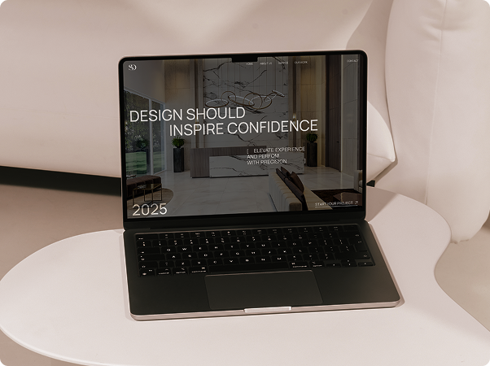
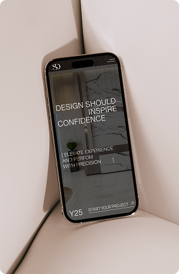

Design studio
Design studio


/04
UX/UI Design + Development
SARVDESIGNS
SARVDESIGNS

/04
UX/UI Design + Development
для компанії, що спеціалізується
на медичних просторах.
Студія дизайну інтер'єру
Редизайн багатосторінкового сайтудля компанії, що спеціалізується
на медичних просторах.
Задача
його більш сучасним, зберігаючи існуючу
структуру та побажання клієнта по дизайну Оновити візуальний стиль сайту та
зробити його більш сучасним,
зберігаючи існуючу структуру та
побажання клієнта по дизайну
Рішення
структури та референсів від клієнта.
Дизайн виконано у стриманій бежево-
коричневій палітрі, що підкреслює
професійність та специфіку медичної
сфери. Сайт включає сторінки: про
компанію, послуги та форму заявки
для зручної взаємодії Проєкт реалізовано на основі готової
структури та референсів від клієнта.
Дизайн виконано у стриманій бежево-
коричневій палітрі, що підкреслює
професійність та специфіку медичної
сфери. Сайт включає сторінки: про
компанію, послуги та форму заявки
для зручної взаємодії
Результат
який зберігає логіку структури та краще
презентує компанію онлайн Оновлений сайт із сучасним дизайном,
який зберігає логіку структури та краще
презентує компанію онлайн